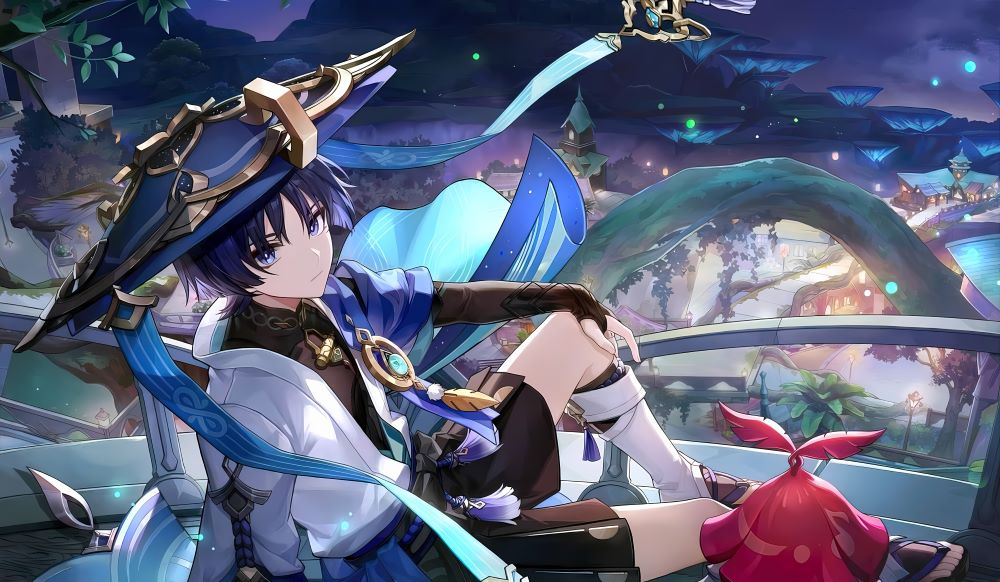
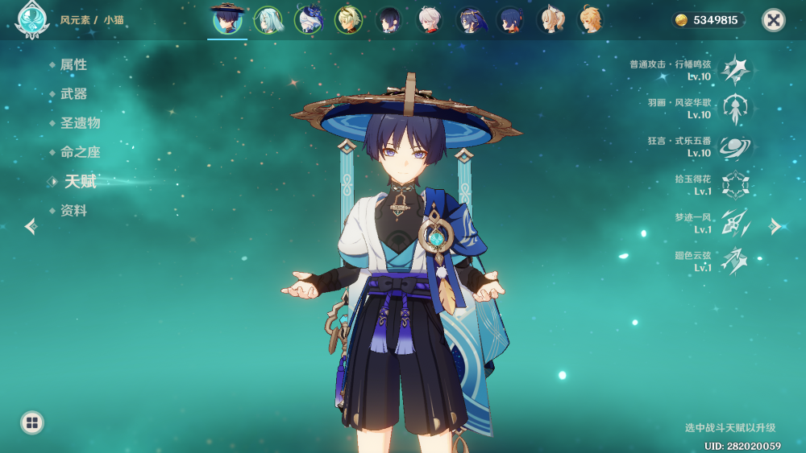
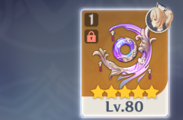
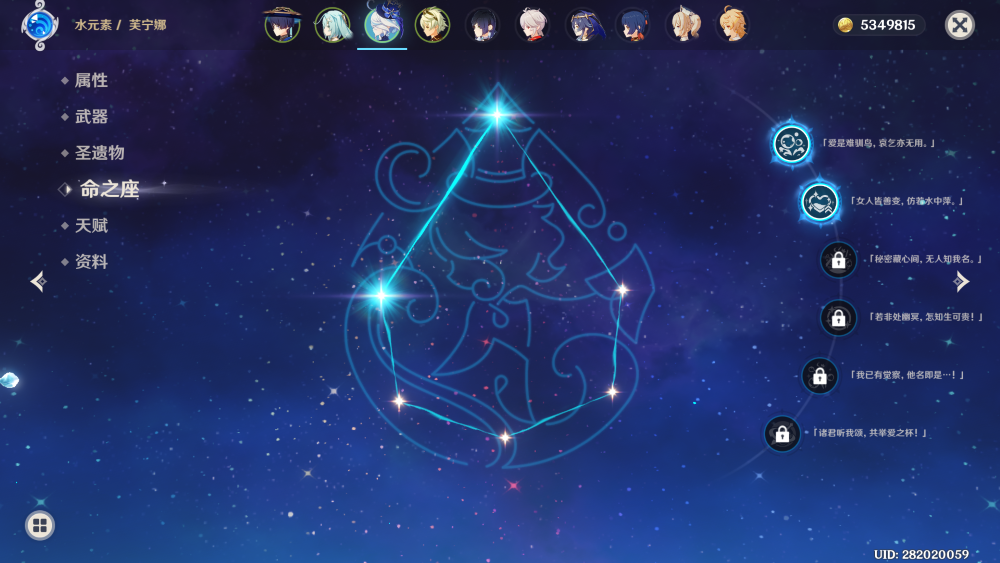
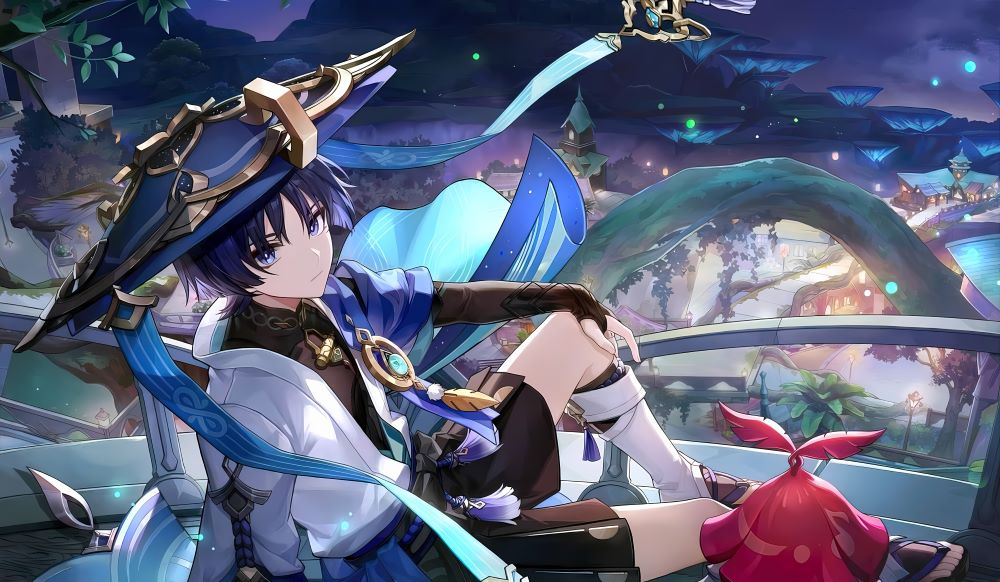

已经用流浪者打满好几次深渊了，还有还有，散珐芙班伤害是真的高，只可惜没盾流浪者玩的很难受

这张流浪者的图我特别喜欢
探索未知的世界
本人高考后才开始玩原神，那会儿特别上头，一天玩八九个小时甚至还多，玩起来灰常快乐。但二游的普遍缺点就是后期太枯燥了，现在有点后悔以前玩那么猛了
我特别喜欢流浪者，当时刚打完散兵主线，得知下个版本（3.8）复刻流浪者，我激动坏了，抓紧肝原石，看着月妈的大世界攻略肝原石，看流浪者的攻略，刷他升级的材料啥的。想想那段时光真好啊.....
功夫不负有心人，我抽到了流浪者（但是大保底，哭），而且珐姐也满命了。但是啊。。。当时不懂事，去下武器池子(如图)。可崩溃了
 还有就是芙芙。剧情太顶了，人设也是绝佳，而且我抽芙芙特别欧，没氪金到手了二命。不过有了月华的经验，不敢抽武器，怕再有个绿华
已经用流浪者打满好几次深渊了，还有还有，散珐芙班伤害是真的高，只可惜没盾流浪者玩的很难受
这张流浪者的图我特别喜欢
rt